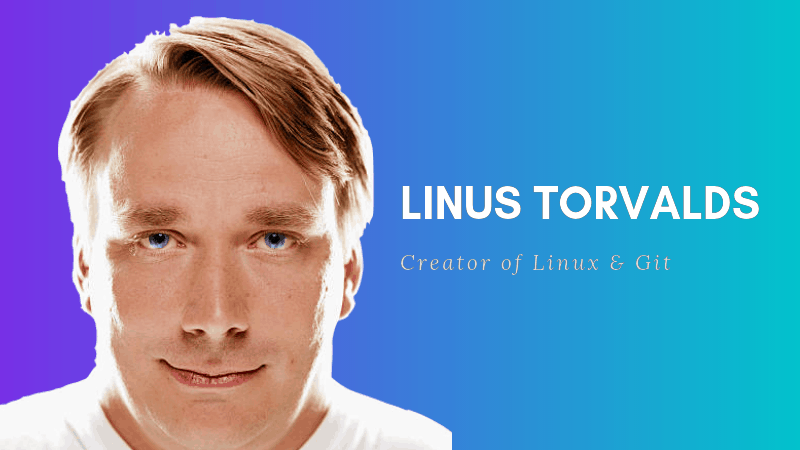
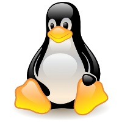

- •Predecesores
- La historia de Linux comenzó mucho antes de lo que la mayoría de gente piensa, ya que en 1969,
Ken Thompson, de AT&T Bell Laboratories, desarrolló el sistema operativo Unix
, adaptándolo a las necesidades de un entorno de investigación, sin saber la importancia que llegaría a tener su trabajo. Un año después Dennis Ritchie (creador del lenguaje de programación C), colaboró con Ken Thompson para pasar el código del sistema Unix a C. Lo que convierto a Unix en un sistema operativo transportable. Unix creció gradualmente hasta convertirse en un producto de software estándar, distribuido por muchos vendedores tales como Novell e IBM. Sus primeras versiones fueron distribuidas de forma gratuita a los departamentos científicos de informática de muchas universidades de renombre. En 1972, los laboratorios Bell empezaron a emitir versiones oficiales de Unix y a otorgar licencias del sistema a distintos usuarios. En 1975, Berkeley lanzó su propia versión de Unix (BSD). Esta versión de Unix se convirtió en la principal competidora de la versión de los laboratorios Bell de ATT&T, pero no era la única ya que en 1980, Microsoft desarrolló una versión de Unix para PC llamada Xenix.En 1991 esta organización desarrolló el SistemaV versión4, que incorporaba casi todas las características que se encuentran en el SistemaV versión3, BSDversión4.3, SunOS y Xenix. Como respuesta a esta nueva versión, varias compañías, tales como IBM y Hewlett Packard, establecieron la Open Software Foundation (OSF) para crear su propia versión estándar del Unix. - •Linux
- Era el año 1991 y Linus Torvalds ,que en aquel entonces era un estudiante de informática de la Universidad de Helsinki, empezó a programar las
primeras líneas de código de un sistema operativo(finalmente llamado LINUX ) como una afición y sin poderse imaginar la gran repercusión que traería.
Hubo una primera versión no oficial de Linux 0.01, pero esta solo incluía el comienzo del núcleo, estaba escrita en lenguaje ensamblador y asumía que
uno tenía acceso a un sistema Minix para su compilación.
El 5 de octubre de 1991, Linus anuncio la primera versión oficial de Linux (versión 0.02). Con esta versión Linus pudo ejecutar Bash (GNU Bourne Again Shell)
y gcc (El compilador GNU de C).Desde aquel entonces se han hecho muchísimas versiones con ayuda de programadores de todo el mundo.
Linux es un sistema operativo compatible con Unix, sus dos características principales y que los diferencian del resto de los sistemas operativos que
encontramos en el mercado son:
1. Es software libre, esto significa que no tenemos que pagar por el uso del mismo.
2. El sistema viene acompañado del código fuente (el sistema lo forman el núcleo del sistema (kernel) mas un gran numero de librerías que hacen posible su utilización). - •TUX
- Tux es el nombre de la mascota oficial de Linux. Creado por Larry Ewing en 1996, es un pequeño pingüino de aspecto risueño y cómico.
La idea de que la mascota de kernel Linux fuera un pingüino provino del mismo Linus Torvalds, creador de kernel Linux.
Existen dos versiones sobre el origen de su nombre:
1.Los pingüinos parecen vestir un esmoquin (que en inglés es tuxedo max, abreviado tux).
2.Las letras que componen Tux provienen de las palabras Torvalds y Unix.
Hay quien dice que Tux era el nombre de un peluche que tenia Linus que era un pingüino llamado Tux. El logotipo se puede usar y modificar sin restricciones, siempre que se reconozca la autoría de Larry Ewing, ya que es su trabajo y se debe reconocer su autoría tal y como se indica en su página. Lo que ha dado lugar a una gran cantidad de llamativos diseños como podemos observar en la imagen aterior. - •LINUS TORVALDS
- Nació el 28 de diciembre de 1969 en Finlandia, es un ingeniero de software conocido por iniciar y mantener el desarrollo del «kernel» de Linux, basándose en el sistema operativo libre Minix y en algunas herramientas, varias utilidades y los compiladores desarrollados por el proyecto GNU. En la actualidad es responsable de la coordinación del proyecto.
- Su Vida
- Con tan solo 11 años y la ayuda de su abuelo que era un matemático y estadístico de la época, el cual al comprarse un Commodore enseño al joven Linus a manejarlo. En 1988 entro en la Universidad de Helsinki en donde aprendió sobre las ciencias de la computación y conoció a Andew S.Tanenbaum el cual ese mismo año creo el sistema operativo Minix. Aprendió a programar en C y después de varios años adquiriendo experiencia y tomar prestadas algunas ideas, creó en 1991 el primer Linux capaz de ejecutar BASH y disponer del compilador GCC
- Le llamo Linux, debido a su apodo de la universidad. Un año más tarde Linux adopto GPL, una licencia que le añadía libertades para poder manipular y redistribuir su código de manera totalmente libre, lo que ha permitido que Linux se mantenga estable hasta nuestros días. Después de estar diez años estudiando y e investigando, entro a trabajar en Transmeta, una empresa dedicada a la fabricación de microprocesadores para portátiles; más tarde decidió abandonarla para poder dedicarse completamente al sueño que había creado, el desarrollo del kernel Linux. En la actualidad trabaja en los laboratorios Open Source Development Labs en Oregón, con la intención de seguir desarrollando su pasión, el kernel de Linux. Torvalds posee la marca registrada «Linux» y supervisa el uso de la marca a través de la organización sin ánimo de lucro Linux International, que se encarga de difundir por el mundo los beneficios del S.O. A pesar de todo, Linus, con sus 36 años, está felizmente casado con Tove y actualmente vive en Portland con sus tres hijas: Patricia, Daniela y Celeste, un lugar mucho más tranquilo para vivir con su familia.



